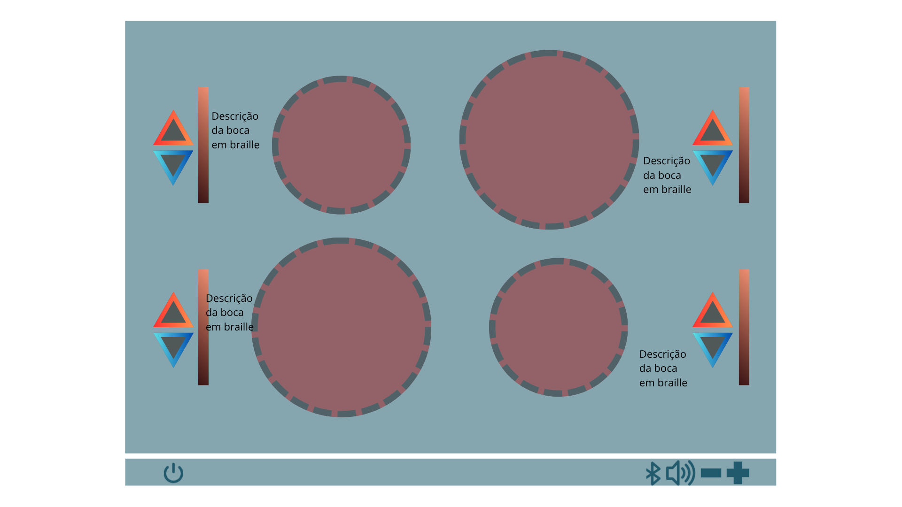

Olá! Meu nome é Karina Sayuri Uehara, sou estudante da matéria Desenvolvimento para Internet I e este é o projeto web da primeira atividade.
Meu papel como projetista é entender e representar as necessidades dos usuários, traduzindo contextos reais em interfaces funcionais e inclusivas. Criar soluções empáticas significa priorizar acessibilidades. Produtos acessíveis ampliam alcance, reduzem barreiras e melhoram a experiência para todos, refletindo responsabilidade ética e respeito à diversidade.
Com o avanço da tecnologia, os computadores se tornaram mais acessíveis e potentes, permitindo que usuários de todos os níveis possam utilizá-los para aprender, trabalhar e se conectar com o mundo. Da mesma forma, eletrodomésticos, como fogões, também devem evoluir para atender às necessidades de todos os usuários, incluindo aqueles com deficiências ou limitações.
Apresento o Fogão Inclusivo: projetado para oferecer uma experiência acessível, simples e segura para pessoas com deficiência, idosos e toda a família. Tecnologia e empatia unidas para transformar a rotina na cozinha!

As cores, formas, sons, texturas ou textos foram estrategicamente pensados para atender as diversas necessidades dos usuários, garantindo uma experiência inclusiva e intuitiva.
Este guia tem como objetivo fornecer instruções claras e acessíveis para o uso da nova proposta de interface de fogão inclusivo.
Para garantir o uso seguro e eficiente do fogão, siga estas instruções:
Descrição dos botões:
| Botão | Função |
|---|---|
| Liga/Desliga | Liga ou desliga o fogão |
| Botão de seta para cima | Aumenta a temperatura da boca do fogão mais próxima |
| Botão de seta para baixo | Diminui a temperatura da boca do fogão mais próxima |
| Botão + | Aumenta o volume dos sinais sonoros |
| Botão - | Diminui o volume dos sinais sonoros |
| Timer | Define o tempo de cozimento |
Todos os direitos reservados - Desenvolvimento para Internet I
Referências: Clique aqui